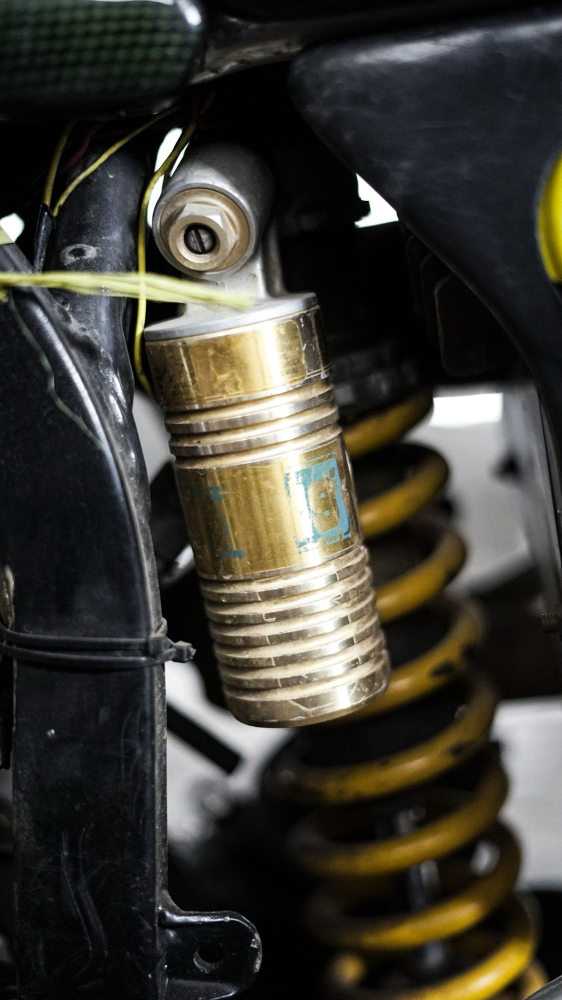
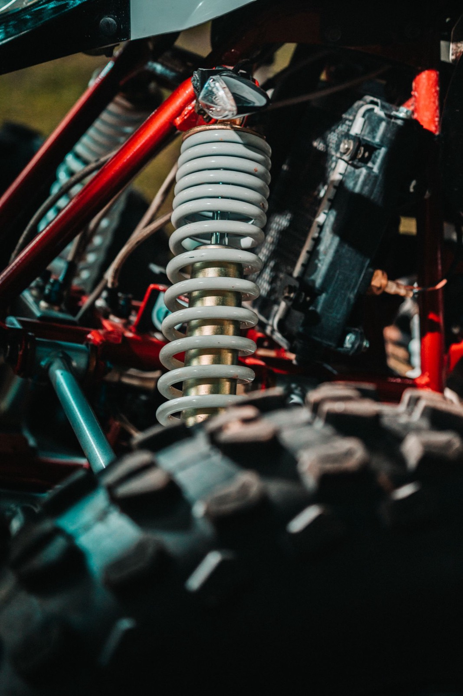
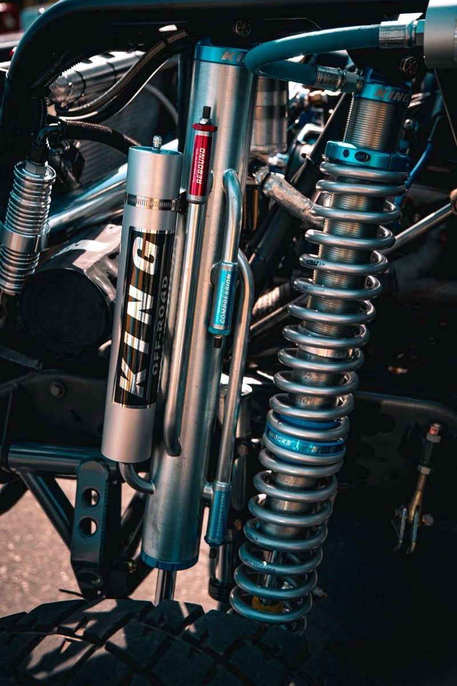
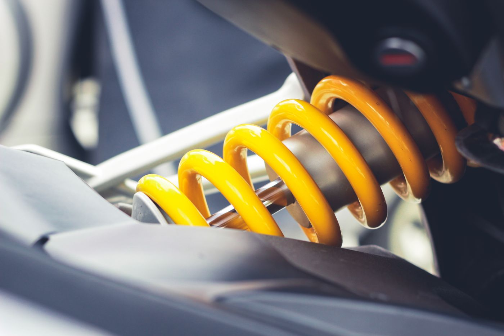
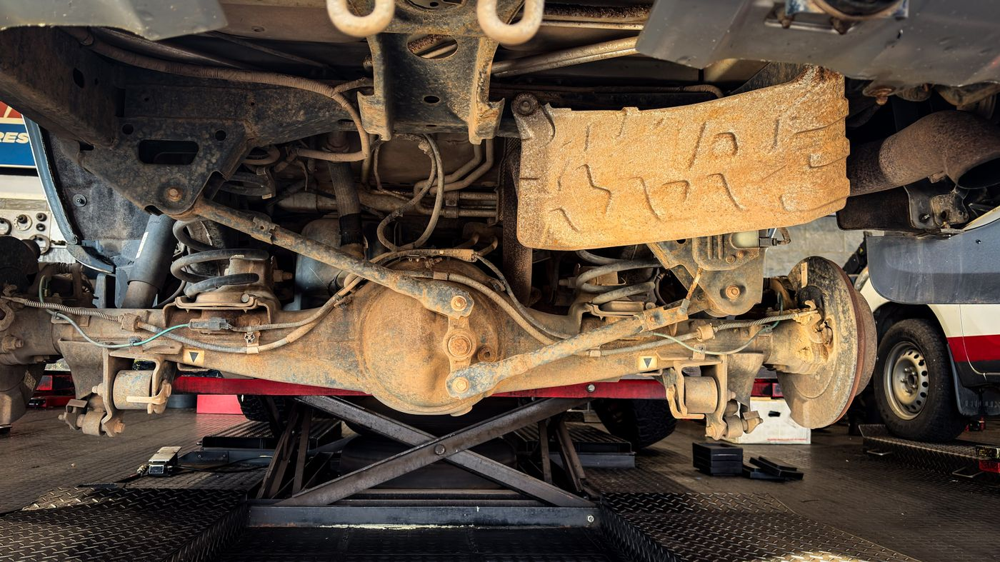

Suspension Upgrades: Springs, Coilovers, and Why Cheap Kits Ruin Cars
Lowering springs are one of the cheapest modifications you can buy and one of the easiest ways to make a car worse. This guide covers what each option actually does, so you can decide whether you're buying handling, stance, or neither.

Lowering springs are one of the cheapest modifications you can buy and one of the easiest ways to make a car worse. This guide covers what each option actually does, so you can decide whether you’re buying handling, stance, or neither.
What suspension does besides holding the car up
Four jobs, and aftermarket parts usually improve one at the expense of the others:
- Support vehicle weight (springs).
- Control the spring’s motion (dampers/shocks).
- Maintain tire contact with the road over bumps and load changes.
- Control geometry: camber, caster, toe and roll center as the suspension moves.
A spring’s job is job 1. The damper’s job is jobs 2 and 3. If you lower the car with springs and keep stock dampers, you’ve changed the spring rate without changing the damping to match. The damper is now under-damped for the stiffer spring and over-worked because it has less travel. That’s the mechanical reason cheap lowering springs feel bad.

The options, ranked by what you get
Lowering springs only. Cheapest. Lowers ride height and usually increases spring rate. Problems: stock dampers are mismatched, and you lose suspension travel. On a car with limited travel, you’ll be into the bump stops constantly, which feels harsh and reduces grip over uneven surfaces. Also changes camber, which increases inner-tire wear if you don’t get an alignment with camber correction.
Springs plus matched dampers. The correct budget approach. Same lowering, but with damping calibrated for the new spring rate. Rides better than springs alone, often better than stock in body control. This is the sweet spot for a street car where you want a modest drop without spending coilover money.
Coilovers (height-adjustable). A matched spring-and-damper unit with adjustable perch height. Real advantages: you can corner-balance the car, set ride height independently, and on good units adjust damping. Real disadvantages: cheap coilovers are often worse than a good spring-and-damper combo — the damping quality is where the money goes, and budget units cut it. Also: many “adjustable” budget coilovers have damping adjusters that do very little, and height adjustment that changes preload rather than travel, which is the wrong way to lower a car.
Air suspension. Height on demand, excellent load-leveling for trucks, and comfortable. Expensive, complex, adds weight, and adds failure points. Excellent for trucks that tow and want stance; unnecessary for a sports car.
Full coilover with proper valving and separate height/preload adjustment. This is what you’re actually paying for at the top end: correct damping curves, independent height and preload, and quality seals that don’t blow in two years.

Geometry is the part people skip
Lowering a car changes its alignment. Specifically:
- Camber goes more negative as you lower a car with a double-wishbone or strut suspension. Some is good for cornering; too much wears the inside of the tire and reduces straight-line grip.
- Toe changes, and incorrect toe is the fastest way to destroy tires.
- Roll center drops, sometimes below ground level, which increases body roll even though the car is lower and stiffer. It’s the counterintuitive result people feel and can’t explain.
- Bump steer can appear if the tie rod geometry is now wrong.
After any ride height change: get an alignment, with camber and caster correction if the platform supports it. Budget for camber plates or adjustable arms if needed. Skipping this is not saving money, it’s buying tires.

Matching spring rate to use
Spring rate is measured in lb/in (or kg/mm). Stiffer is not better; appropriate is better.
- Street: modest increase over stock. Enough to reduce roll, not enough to make expansion joints feel like impacts.
- Street plus occasional track: higher rate, matched damping, and stiffer anti-roll bars to control roll without going extreme on springs.
- Track: high rates, but note that a stiff spring on a bumpy track is slower than a softer one that keeps the tire loaded.
Anti-roll bars are the underrated tool: they reduce body roll without reducing ride quality in a straight line, because a bar only acts when the two sides move differently. Fitting a bigger rear bar is often a better first step than stiffer springs.

Trucks and SUVs are different
On a truck, “suspension upgrade” usually means one of three things and they’re not interchangeable:
A leveling kit raises the front to match the rear. It is a stance change and buys you almost no capability.
A lift raises both ends for clearance, and it needs geometry correction — upper control arms, sometimes a differential drop or carrier bearing shim. Skip that and you eat CV joints and get an alignment you can’t fix.
Load support means air bags or helper springs, for towing. Stability and safety improve when loaded; nothing changes when the truck is empty.
If you tow, load support is the upgrade that improves your driving. If you want clearance, lift properly. Don’t lift a towing truck for looks and expect it to tow better. It will tow worse.
Buying by use
- Budget-limited street car: matched spring and damper kit, then an alignment. Don’t buy the cheapest coilovers.
- Serious about handling: good coilovers with real valving, plus anti-roll bars, plus a corner balance and alignment from someone who knows your platform.
- Truck that tows: air bags. Truck that needs clearance: a proper lift with geometry correction.
- Never: cut springs, or fit lowering springs and skip the alignment.
Whatever you buy, budget the alignment as part of the purchase price. It’s not optional and it’s not a detail.